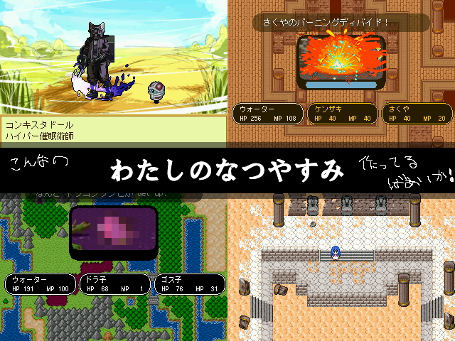

|
| |
 | |
| 【作者名】 | メッキの巻物 |
| 【作者コメント】 | ■ ひたすら歩くだけのゲームです。 ■ まっすぐ進むもよし、うろうろするもよし。 ■ あなただけのウォーキングスタイルを目指しましょう。 ■ 途中、行く手を阻む者達や、宝箱、憩いの場や旅人等。 ■ いろんな出会いが貴方を待ち受けているでしょう。 （以下、付属テキストに続く） 2日間で作ったので、どうしようもない出来になってるかもしれません。 慣れれば30～60分でクリアできると思います。 |
| 【管理人コメント】 | いざウォーキング！ |
|
| |